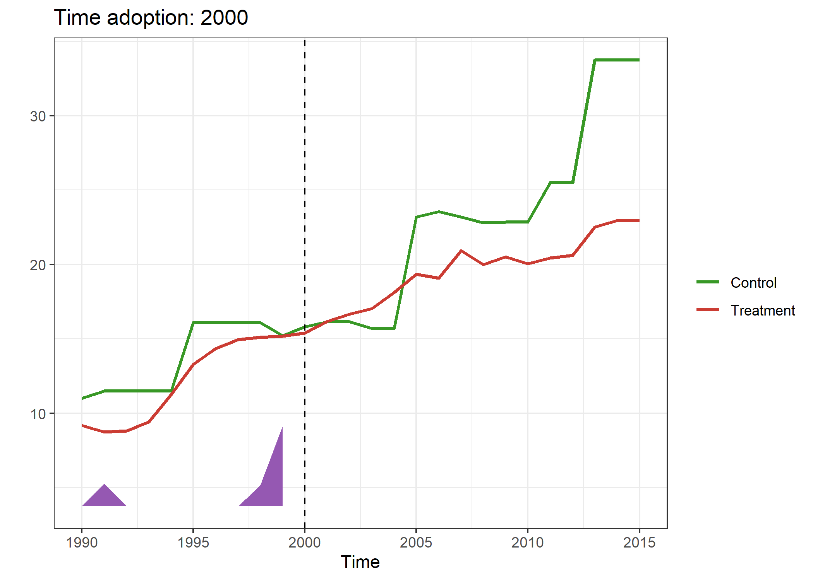
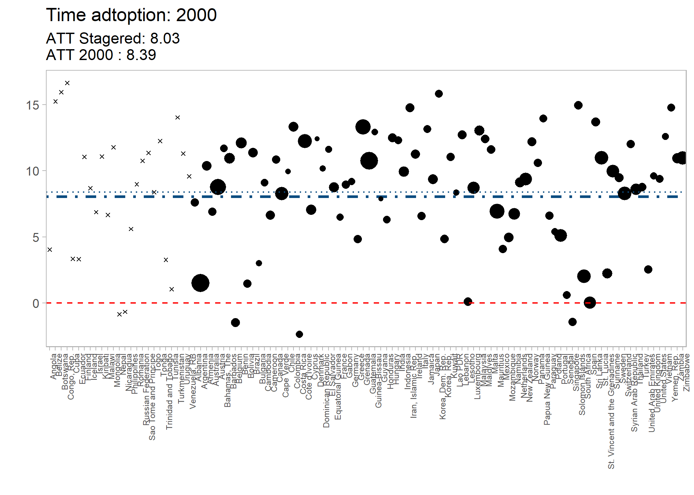

Overview
Adaptation of the Synthdid library for staggered panel data, with ease of entering covariates.
Installation
# Development version from GitHUB
# install.remotes("remotes")
remotes::install_github("tjhon/ssynthdid")Usage
Example data Quota
quota_df <- quota()
print(head(quota_df))
#> # A tibble: 6 × 6
#> womparl lnmmrt country year quota lngdp
#> <dbl> <dbl> <chr> <dbl> <dbl> <dbl>
#> 1 28.8 4.26 Albania 1990 0 8.46
#> 2 3.60 4.23 Albania 1991 0 8.12
#> 3 5.70 4.17 Albania 1992 0 8.05
#> 4 5.70 4.14 Albania 1993 0 8.14
#> 5 5.70 3.89 Albania 1994 0 8.23
#> 6 5.70 3.97 Albania 1995 0 8.36
estimate <- staggered_synth_estimate(quota_df, "country", "year", "quota", "womparl")
estimate |> dplyr::glimpse()
#> List of 3
#> $ att_estimate: num 8.03
#> $ att_table : tibble [7 × 11] (S3: tbl_df/tbl/data.frame)
#> ..$ time : num [1:7] 2000 2002 2003 2005 2010 ...
#> ..$ tau : num [1:7] 8.39 6.97 13.95 -3.45 2.75 ...
#> ..$ tau_wt : num [1:7] 16 28 26 11 6 4 3
#> ..$ weighted_tau: num [1:7] 1.428 2.075 3.859 -0.404 0.175 ...
#> ..$ N0 : int [1:7] 110 110 110 110 110 110 110
#> ..$ T0 : num [1:7] 10 12 13 15 20 22 23
#> ..$ N1 : int [1:7] 1 2 2 1 1 1 1
#> ..$ T1 : num [1:7] 16 14 13 11 6 4 3
#> ..$ weights_sdid:List of 7
#> ..$ Y_beta :List of 7
#> ..$ Units :List of 7
#> $ data_ref : tibble [3,094 × 7] (S3: tbl_df/tbl/data.frame)
#> ..$ unit : chr [1:3094] "Albania" "Angola" "Argentina" "Armenia" ...
#> ..$ time : num [1:3094] 1990 1990 1990 1990 1990 1990 1990 1990 1990 1990 ...
#> ..$ treatment: num [1:3094] 0 0 0 0 0 0 0 0 0 0 ...
#> ..$ outcome : num [1:3094] 28.8 14.5 6.3 35.6 6.1 ...
#> ..$ treated : num [1:3094] 0 0 0 0 0 0 0 0 0 0 ...
#> ..$ ty : num [1:3094] 0 0 0 0 0 0 0 0 0 0 ...
#> ..$ tyear : num [1:3094] 0 0 0 0 0 0 0 0 0 0 ...att_estimate
estimate$att_estimate
#> [1] 8.034102Time information
estimate$att_table
#> # A tibble: 7 × 11
#> time tau tau_wt weighted_tau N0 T0 N1 T1 weights_sdid Y_beta
#> <dbl> <dbl> <dbl> <dbl> <int> <dbl> <int> <dbl> <list> <list>
#> 1 2000 8.39 16 1.43 110 10 1 16 <named list> <dbl[…]>
#> 2 2002 6.97 28 2.08 110 12 2 14 <named list> <dbl[…]>
#> 3 2003 14.0 26 3.86 110 13 2 13 <named list> <dbl[…]>
#> 4 2005 -3.45 11 -0.404 110 15 1 11 <named list> <dbl[…]>
#> 5 2010 2.75 6 0.175 110 20 1 6 <named list> <dbl[…]>
#> 6 2012 21.8 4 0.926 110 22 1 4 <named list> <dbl[…]>
#> 7 2013 -0.820 3 -0.0262 110 23 1 3 <named list> <dbl[…]>
#> # ℹ 1 more variable: Units <list>Plots
Trajectory
plot_estimate$time_{time}
plt_estimate <- estimate |> ssynthdid_plot()
plt_estimate$time_2000
Weights
plot_estimate$time_{time}
plt_estimate_wg <- estimate |> ssynthdid_units_plot()
plt_estimate_wg$time_2000